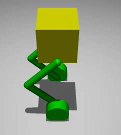
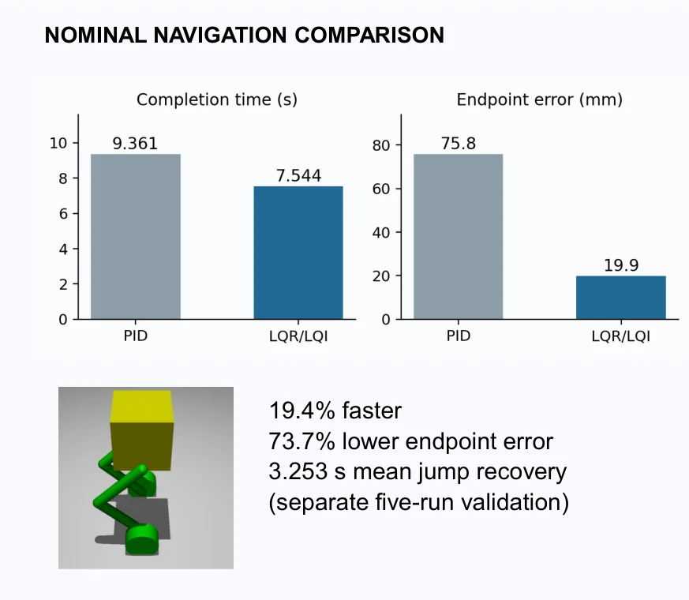

Robotics & control · MSc dissertation
Jumping self-balancing wheeled biped
Python and MuJoCo simulation comparing PID, LQR and LQI control for balancing, navigation and jumping.

The project
For my MSc dissertation, I developed a simulation of a jumping self-balancing wheeled-biped robot. I wanted to compare different controllers and see how well they could keep the robot balanced while moving to targets and recovering from jumps.
What I developed
- Developed PID, LQR and LQI controllers for balancing and navigation, alongside a separate steering controller.
- Used cubic Hermite curves for path planning and separate phases for crouching, thrust, flight, landing and recovery.
- Ran navigation tests in Python to compare the controllers across repeated trials.

What the results mean
Across 140 navigation trials, both controllers completed their assigned tests. LQR/LQI was around 19.4% faster than PID and had 73.7% lower endpoint error, although it also produced more pitch movement and control effort. In a separate five-run test, average recovery after a jump was 3.253 seconds.
Post-dissertation extension · MuJoCo simulation
The obstacle course I built after submitting
After submitting my MSc dissertation, I extended the simulation into a continuous 42-metre mission. The robot has to steer around three large obstacles, clear three low barriers with jumps, negotiate the final approach and park inside a marked square without falling over.
What happens in the video
- The robot follows a planned path around the large obstacles while balancing.
- It then clears the three barriers using the jumping controller.
- At the end, it slows down and switches from navigation to position holding to park in the square.
Why parking was the hardest part
The early runs could make it through the obstacles and jumps but would oscillate or reverse after reaching the target. I initially spent time retuning gains. By reviewing simulation data, I found that the assumed equilibrium pitch did not match the robot’s actual balance condition. Correcting the pitch reference and improving the handover from moving to stationary control allowed it to settle at the intended parking location.
The 140 navigation trials were part of my dissertation testing. The video above shows one run of the longer obstacle course I developed afterwards.